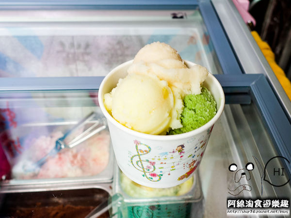
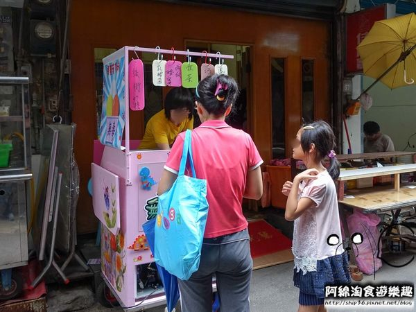
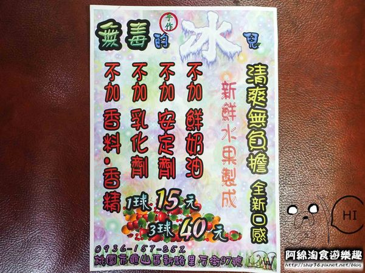
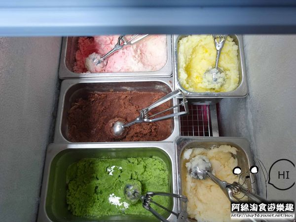
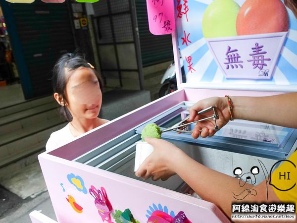
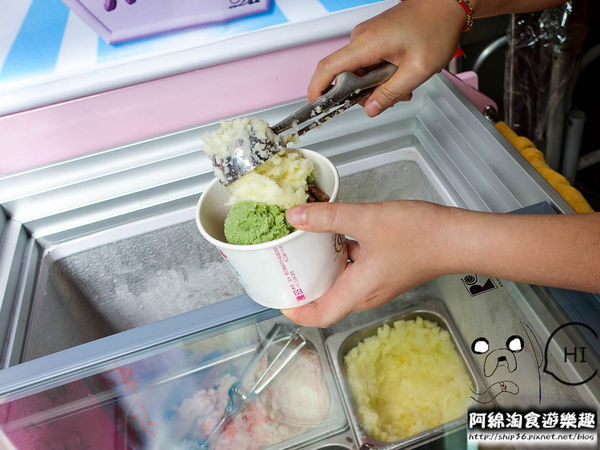
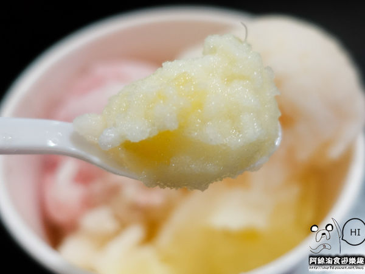
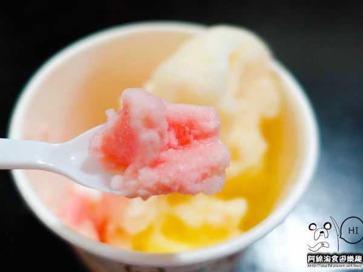
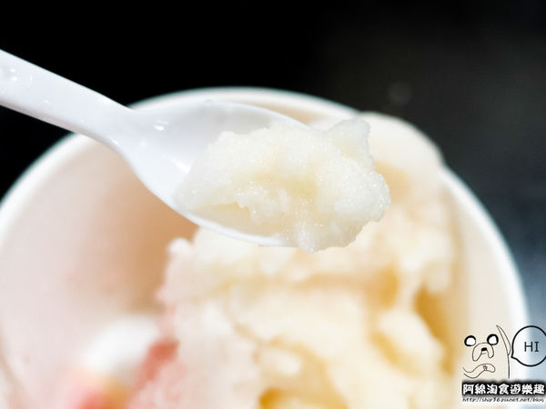
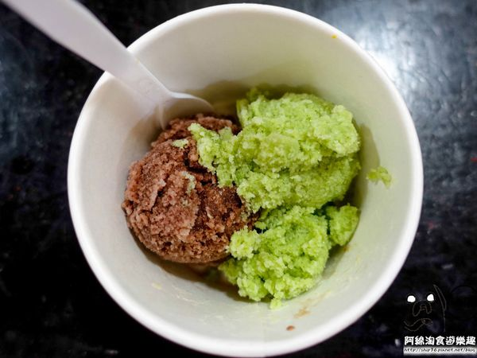

熱爆！氣溫動不動就飆到35～40度，
好想吃冰冰涼涼的冰淇淋....
今天就來看看是哪家冰淇淋擄獲我的舌頭吧！

龜山美食鴻海產粥隔壁店家就是今天要介紹的
【桃園冰店】無毒的冰兒-清爽可口又無負擔的冰淇淋
是自然．手工．無添加物．無防腐劑的好冰兒！

ＤＭ標榜不添加亂七八糟的添加物～
冰淇淋用新鮮水果製成！還有我愛的巧克力和抹茶～
１球１５元，３球４０元，口味可任意搭配！

＊每日限量手工冰品
今天有抹茶、巧克力、蜂蜜西瓜、鳳梨和多多口味，
純外帶店，沒有座位，可以試吃後再買，
冰淇淋產量不多，每日限量，賣完就收攤，
我懷疑店家是根本做開心的╮(╯▽╰)/

年輕老闆娘用叭噗挖勺挖出一球一球冰淇淋，
捕捉到小朋友滿心期待的表情，
想當年........我也是像她一樣滿臉期待，
等叭噗阿伯挖出一球一球冰淇淋的小朋友！

＊人情味濃郁的龜山店家
可能是年輕老闆娘是學幼教吧！對小朋友非常親切，
對方媽媽花４０元買３球，親切老闆娘還多送１球，
堆得像小山一樣的冰淇淋！
優惠以店家公告為主，不要拿食記去要優惠，感恩！
＊有果肉的鳳梨冰淇淋
酸酸甜甜，還有肉眼可見、嘴巴吃得到的鳳梨丁，
吃起來像綿綿冰的口感，但不甜膩，意外清爽～
很適合夏天來上一球。

＊蜂蜜西瓜冰這裡才有！
西瓜也是很消暑的夏季水果，
蜂蜜和西瓜不是混打在一起，
外層是蜂蜜裡頭是西瓜，讓冰更有層次感，
一球冰淇淋可以吃到兩種口味！

＊酸甜多多口味是我的最愛！
以前沒有這麼多冰可以選擇的古早年代，
有多古早？就是養樂多一瓶才賣５元的年代，
我們把多多放到冷凍庫裡等結凍後再拿筷子戳冰沙，
這家多多冰吃起來就是那個味道，超好吃der～


除了以水果為主食材還有大家喜歡的巧克力和抹茶，
我超喜歡巧克力口味，
聽說是三種巧克力混合製作，
真材實料讓巧克力味道又香又濃郁！
抹茶口味則是用日本進口純抹茶粉製作，
少了苦澀多了茶香！
一球才賣１５元！超佛心！
使用純天然水果為基底，吃多也不口渴，
花了７０元共吃５球，每球都很滿意～
我個人的喜好程度：
多多＞巧克力＞鳳梨＞抹茶＞蜂蜜西瓜
消暑又解渴，身體不負擔的冰就在這裡等你來吃！
小叮嚀：若是外帶回家冰著改天吃，請遵守食用方法，有兩種
1.從冷凍庫拿出來，放在室溫15分鐘後，即可享用
2.從冷凍庫拿出來，放在冷藏30分鐘後，即可享用
會這麼麻煩是因為沒加乳化劑，安定劑.鮮奶油
稍微退冰才會比較好挖哦～
引用文章:阿綿淘食遊樂趣